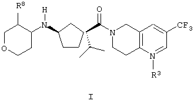

Изобретение относится к тетра

где R 3 является кислородом или отсутствует; R8 выбирают из: (а) водорода, (b) C1-3 алкила, который является незамещенным или замещен 1-6 атомами фтора, (с) -O-C1-3 алкила, (d) фтора и (е) гидрокси; и их фармацевтически приемлемым солям и отдельным диастереомерам.
Мэри Шелли утверждала:Плох тот химик, который не интересуется ничем кроме своего предмета
.